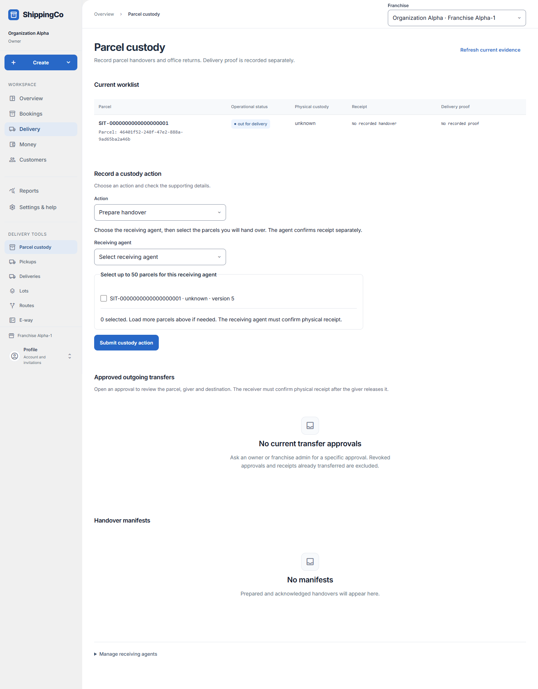

Parcel handovers and custody
Record who physically holds each parcel.

Before you start
Assignment and physical receipt are different. Check the actual parcels before confirming a handover.
Follow the physical handover in order
- Open Delivery, then Parcel custody. Current worklist identifies parcels assigned to you or recorded in your custody. Read the current holder before choosing an action.
- Prepare handover creates a list for a named receiving agent. Select up to 50 actual parcels. A different assignment needs its dispatcher instruction; a parcel already held by another agent needs its specific transfer approval.
- Open Handover manifests and choose View handover. The receiving agent checks all listed parcels and confirms receipt only when every listed parcel is physically present. Preparing the list alone does not change physical custody.
- For a transfer between holders, the authorized person first approves the specific parcel and destination. The giver then records release using that approval. The named receiving agent records receipt separately. For transfer to an agent, use the receiving manifest reference; leave it empty for office release.
- When receiving an office return, select the true condition: without discrepancy, damaged, tampered, label mismatch or missing. Missing does not falsely transfer custody to the office.
- The selected handover can show saved outcome counts and evidence time. Failed counts can overlap physical outcomes; genuine delivery proof is still required for delivered counts.
- Use Cancel this prepared handover only to stop that preparation being acknowledged, then review Confirm cancel handover. It is not a record of movement. An unused approval can be revoked; this does not undo a completed transfer.
- Expand Manage receiving agents for invitations and access changes if your role permits it. Finish any uncertain custody request using the recovery controls before changing branch or beginning another request.
Quick steps
- Open the custody worklist and check the parcel and current holder.
- For a handover, choose Prepare handover, choose Receiving agent and select up to 50 parcels. Supply approvals where asked.
- Submit custody action. The receiving agent opens View handover and checks every listed parcel.
- The receiving agent selects Confirm I received every listed parcel only after receiving them.
- For a transfer, obtain a specific approval. The giver opens Approved outgoing transfers and records release to the named destination.
- The new receiver confirms receipt separately. For an office return, record the actual condition.
Fields on this screen
- Action: Prepare handover, Authorize reassignment, Approve specific transfer, Receive office return, Confirm parcel release or Revoke transfer approval. Choices depend on your role.
- Receiving agent: Required for preparation, reassignment or transfer to an agent.
- Select up to 50 parcels: Choose only the parcels going to this receiver.
- Dispatcher instruction for [tracking number]: Required when the parcel is assigned to a different agent. Use the saved instruction ID.
- Transfer approval for [tracking number]: Required when another agent currently holds the parcel.
- Parcel: Select the current parcel for a single-parcel action.
- Transfer destination: Named agent or Office.
- Office receipt condition: Received without discrepancy, damaged, tampered, label mismatch, or missing. Missing leaves custody with the agent.
- Transfer approval reference: Required for release or revocation. Paste the saved approval UUID.
- Receiving manifest reference (leave empty for office): Required supporting handover ID for transfer to an agent. Leave empty when releasing to the office.
What happens next
The app keeps preparation, release and receipt as separate records. A delivery assignment alone does not prove that an agent received a parcel.
If you get stuck
- No parcel in the list: load more or check the branch and current assignment.
- An approval alone does not move custody. Complete the giver and receiver steps.
- Cancel this prepared handover stops acknowledgement of that preparation; it does not undo physical movement.
- Revoking an unused transfer approval does not reverse a completed handover.
- If the result is uncertain, use the on-screen recovery action before starting another request.
About this guide
Checked against the current app source on 1 November 2026. Buttons depend on your access and the current record. This guide does not give extra access.